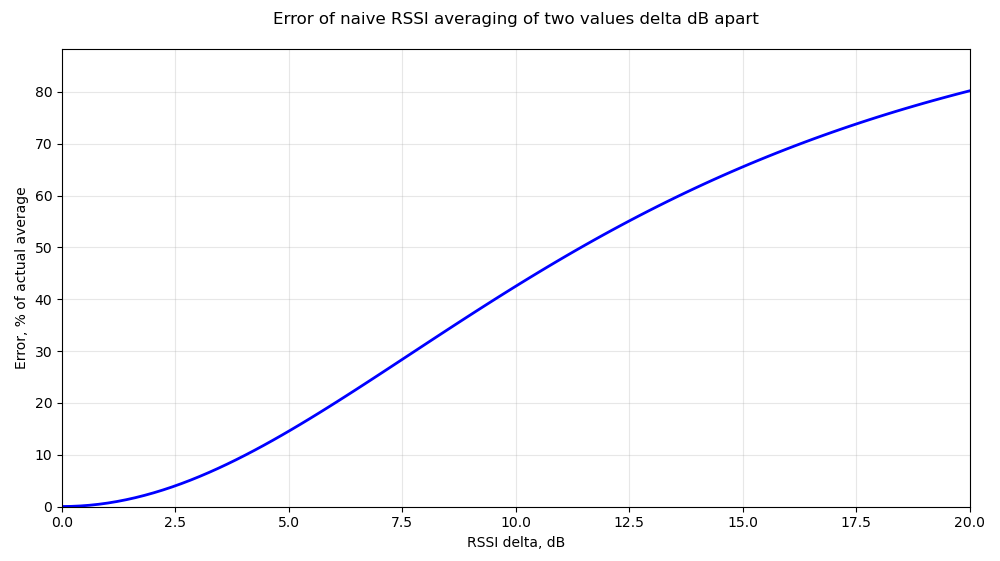

Basics of dBm
Engineers working in the wireless communication field often need to deal with physical values that differ by several orders of magnitude. To simplify calculations and make operations easier to follow, logarithmic units are often used. One such unit is dBm, which expresses the power level of a radio signal.
dBm is an absolute unit which shows how much bigger (in dB) certain value than 1 mW.
E.g., value of 0 dBm corresponds to a power which is 0 dB greater than 1 mW, thus it is 1 mW. Value of +10 dBm corresponds to a power level which is 10 dB greater than 1 mW, so it is 10 mW.
In general dBm value can be converted to mW using the following formula:Conversion from mW to dBm correspondingly:
Averaging RSSI
Often dBm values are used to express RSSI - Received Signal Strength Indicator. It's a value that can be used for different purposes:
- select which access point or base station to connect to
- check the hardware works correctly
- display signal strength to the user
(Interactive. Use your mouse)
- evaluate the location of the device using trilateration
(Interactive. Use your mouse)
Some of the use-cases mentioned above don't require accurate RSSI measurements, but others require RSSI measurement error to be as small as possible. For example, when a software performs RSSI-based localization, the accuracy of RSSI measurements directly affects the accuracy of position estimation. One of the most common ways of reducing measurement error is averaging. The naive way of finding average RSSI is based on a well known formula:
However, this approach is incorrect. The formula above calculates correctly average of multiple values using linear units so it can be used to find average value of signal power expresed in mW. But due to logarithmic nature of RSSI (which is usually expressed in dBm) the formula should be transformed to convert dBm to mW first. So the correct approach would be the following:
where
and
Demonstration
By using a simple Python script we can find the error caused by naive RSSI averaging of two values. The error depends only on the difference between averaged values (i.e., the error of averaging pair of [-10 dBm, -20 dBm] is the same as the error of averaging [-20 dBm, -30 dBm]). The error shown on the plot is calculated as follows:

Average RSSI calculator:
Summary
- In the use-cases where RSSI accuracy is important, dBm measuremets should be converted to mW before averaging.
- Implementation of proper RSSI averaging requires additional math operations to convert dBm to mW and back. It might be costly in terms of computation power so there is a trade-off between average RSSI calculations accuracy and processor load.
- The same recommendations are relevant for other use-cases logarithmic absolute units.